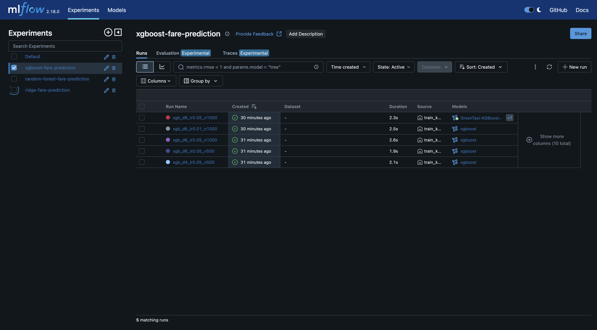
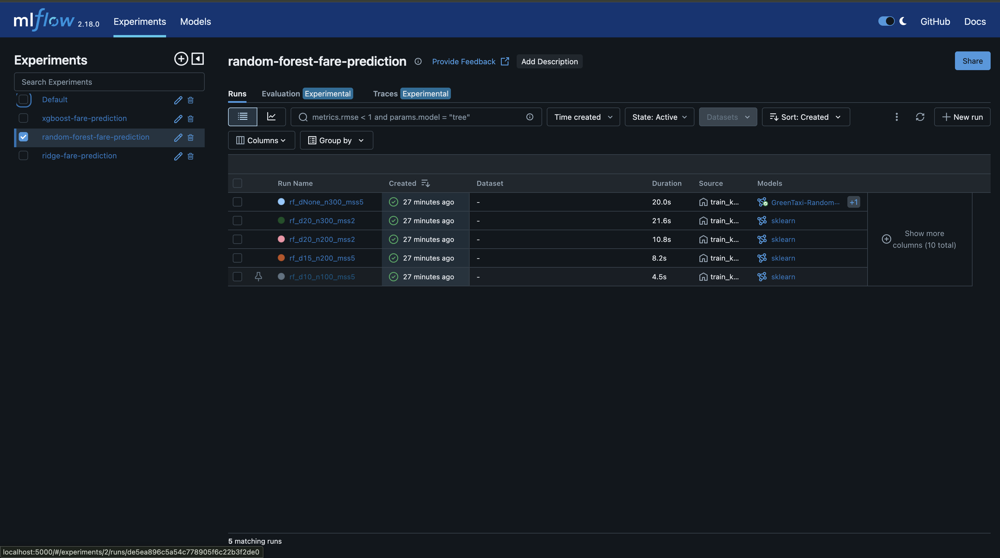
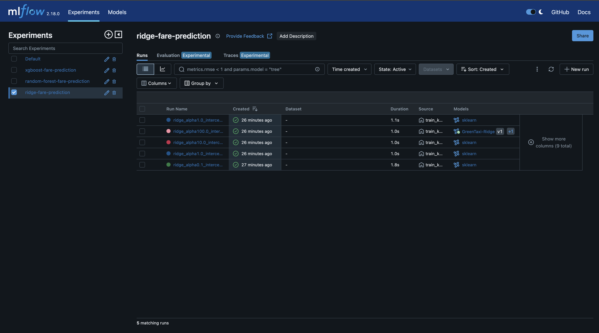
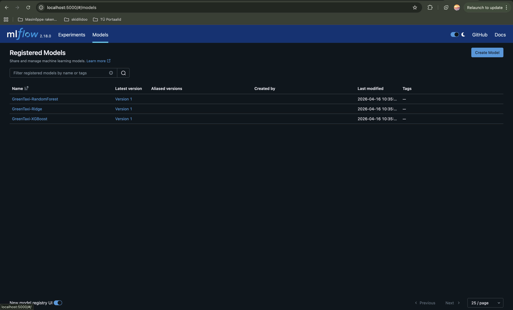
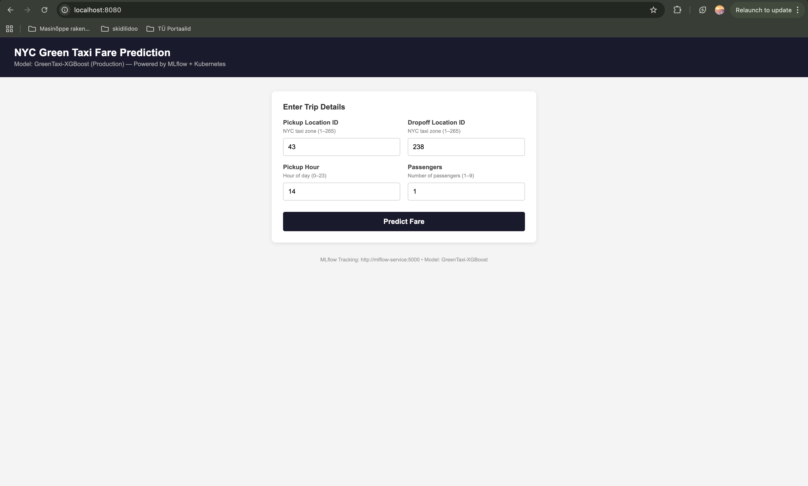
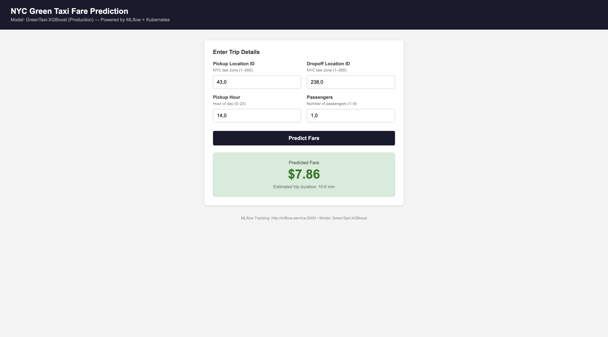
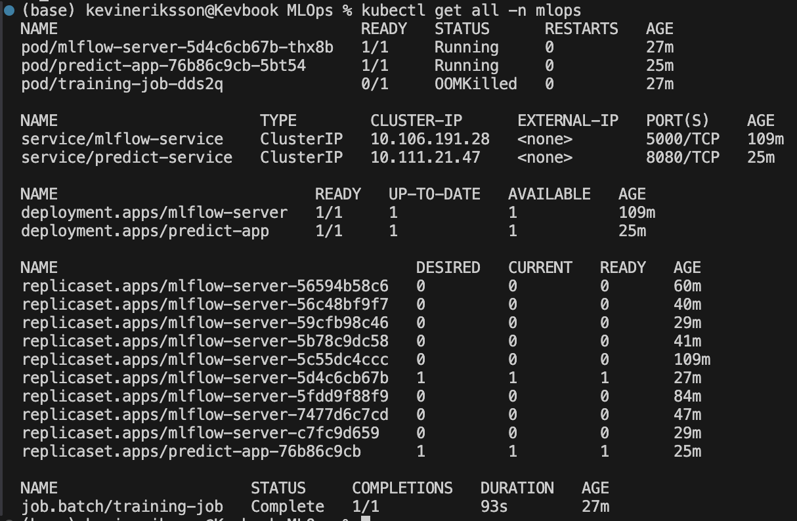

Minikube cluster with MLflow tracking, model training, and prediction serving
| Item | Value |
|---|---|
| Training data | January + February 2021 green taxi (71,701 rows after cleaning) |
| Evaluation data | March 2021 green taxi (40,736 rows after cleaning) |
| Train / Val split | 80/20 (57,360 / 14,341) with random_state=42 |
| Features (5) | PULocationID, DOLocationID, pickup_hour, passenger_count, est_duration_min |
| Target | fare_amount (USD) |
| MLflow version | 2.18.0 (SQLite backend on K8s PVC) |
| Kubernetes | Minikube (4GB RAM, 2 CPUs) |
| Component | K8s Resource | Image | Port | Purpose |
|---|---|---|---|---|
| MLflow Server | Deployment + ClusterIP Service | mlops-mlflow:latest | 5000 | Experiment tracking, model registry |
| Training Pipeline | Job | mlops-training:latest | — | Trains 3 model types, registers best, assigns stages |
| Prediction App | Deployment + ClusterIP Service | mlops-predict:latest | 8080 | Flask web app for fare predictions |
| Shared Storage | PersistentVolumeClaim | — | — | 2Gi volume for data, DB, and models |
| Ingress | NGINX Ingress | — | 80 | Routes taxi.local and mlflow.local |
Deployment order: MLflow server → Training job (seeds data, trains, registers, stages) → Prediction app (loads Production model).
| Run | max_depth | learning_rate | n_estimators | MAE | RMSE | R² |
|---|---|---|---|---|---|---|
| Run 1 | 4 | 0.05 | 500 | $4.1987 | $7.7351 | 0.6767 |
| Run 2 | 6 | 0.05 | 500 | $3.9747 | $7.4512 | 0.7000 |
| Run 3 | 6 | 0.05 | 1000 | $3.8428 | $7.3345 | 0.7094 |
| Run 4 | 6 | 0.01 | 1000 | $4.1494 | $7.6566 | 0.6833 |
| Run 5 ★ | 8 | 0.05 | 1000 | $3.7526 | $7.2486 | 0.7161 |

| Run | max_depth | n_estimators | min_samples_split | MAE | RMSE | R² |
|---|---|---|---|---|---|---|
| Run 1 | 10 | 100 | 5 | $4.2989 | $7.8855 | 0.6640 |
| Run 2 | 15 | 200 | 5 | $4.1299 | $7.7086 | 0.6790 |
| Run 3 | 20 | 200 | 2 | $4.0407 | $7.6330 | 0.6852 |
| Run 4 | 20 | 300 | 2 | $4.0393 | $7.6336 | 0.6852 |
| Run 5 ★ | None | 300 | 5 | $4.0373 | $7.6217 | 0.6862 |

| Run | alpha | fit_intercept | MAE | RMSE | R² |
|---|---|---|---|---|---|
| Run 1 | 0.1 | True | $4.8902 | $8.5434 | 0.6057 |
| Run 2 | 1.0 | True | $4.8902 | $8.5434 | 0.6057 |
| Run 3 | 10.0 | True | $4.8902 | $8.5434 | 0.6057 |
| Run 4 ★ | 100.0 | True | $4.8902 | $8.5434 | 0.6057 |
| Run 5 | 1.0 | False | $4.9094 | $8.5517 | 0.6049 |

Best model per experiment evaluated on March 2021 data. Stages assigned via client.transition_model_version_stage() in code.
| Registered Model | MAE (March) | RMSE (March) | R² (March) | Stage |
|---|---|---|---|---|
| GreenTaxi-XGBoost v1 | $3.9290 | $7.7936 | 0.6879 | Production |
| GreenTaxi-RandomForest v1 | $4.2185 | $8.1392 | 0.6596 | Staging |
| GreenTaxi-Ridge v1 | $4.9967 | $8.8887 | 0.5940 | Staging |

Best model (XGBoost) reloaded from MLflow and re-evaluated on the same validation set.
| Metric | Logged | Reproduced | Match |
|---|---|---|---|
| MAE | $3.7526 | $3.7526 | ✓ |
| RMSE | $7.2486 | $7.2486 | ✓ |
| R² | 0.7161 | 0.7161 | ✓ |
random_state=42), deterministic inference.Flask app loads the Production XGBoost model from MLflow and a duration model from the shared PVC. Users enter trip details and receive a predicted fare.
| Setting | Value |
|---|---|
| Model | models:/GreenTaxi-XGBoost/Production |
| Duration model | /mlflow-data/duration_model.pkl |
| Port | 8080 (taxi.local via Ingress) |


